Activity: Using construction elements in profiles
Overview
In this activity, learn to use construction elements when drawing a profile or sketch in order to capture design intent.
After completing this activity, you are able to:
-
Use construction elements to simplify profile or sketch construction.
-
Use the construction elements to drive the resulting geometry (a cutout feature).
In this activity, examine a specific feature within a part. You do not construct the part in this activity, but you draw the profile for the feature. To simplify profile creation, use a construction element in the Sketch drawing environment. As previously mentioned, construction elements aid in profile creation but are ignored during profile validation checks.
Construction elements serve as skeletal elements that helps drive the other elements in the profile.
-
Examine the patterned cutout feature (1).
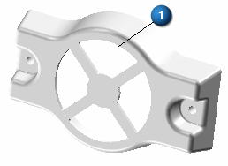
Each of the four cutouts must sweep 90°. A narrow web of material must occupy space between each cutout to avoid breakout. To create this model, use construction elements to locate the cutout, provide the mechanism for the sweep angle, and provide the distance between each cutout.
Create a new ISO Metric Part document.
Make sure you are in the ordered environment.
Choose the Sketch command .
In PathFinder, turn off the display of the base coordinate system and turn on the display of the base reference planes.
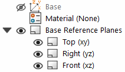
Select the reference plane shown.
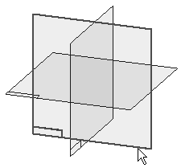
On the status bar, click the Pan command . Hold the left mouse button at the center or intersection of the reference planes. Move the cursor from position 1 to the lower right corner of the Sketch window (position 2). This moves the reference planes out of the way and prevents unwanted relationship placement between a profile element and a reference plane.
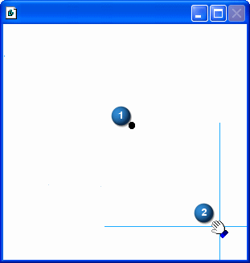
Choose the Line command. Draw the three lines as shown in the illustration.
Add the dimensions and edit their values as shown.
Make each of the lines construction geometry.
In the Draw group, choose the Construction command and select each of the three lines.
The angled lines attach to the horizontal line at its midpoint.
Using the Equal relationship, make each of the angled lines equal to the horizontal line.
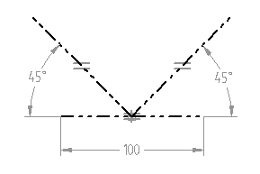
Add lines using the Offset command .
In the Draw group, choose the Offset command.
Type a value of 10 for the offset distance.
Set the Chain option in the Offset Select box.
Offset the two angled lines as seen in the illustration below.
Click the Accept button to confirm selection. Move the cursor to the interior of the “V” shape as shown and click.
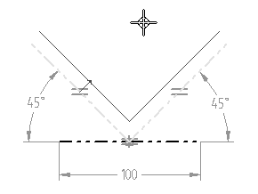
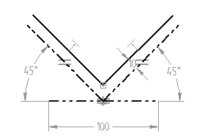
Choose the Arc by Center Point command
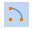
. Place two arcs as shown in the following illustration.-
Both arc center point origins are the midpoint of the horizontal construction line.
-
Small arc Point-2 is on the left angled line, Point-3 on the right-angled line.
-
Large arc Point-2 connects to the end point of the left angled line, and Point-3 connects to the end point of the right-angled line.
-
Use Smart Dimension to dimension the two arcs and edit the values of the dimensions to those shown in the illustration.
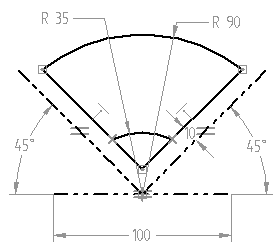
Choose the Trim command  .
.
Trim away the offset lines below the small arc. The result of the trim is shown.
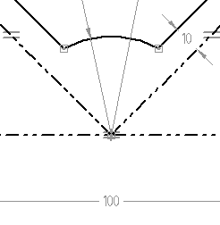
Select all sketch elements by dragging a fence around the elements. All selected sketch elements should display with a green color.
On the Home tab→Relate group, choose Relationship Assistant . Use the Show Variability command to verify that the profile has only two degrees of freedom.
Resolve the two remaining degrees of freedom.
In the Relate group, choose the Connect command and place a Connect relationship between the midpoint of the horizontal construction line, as seen in the illustration to the left, and the midpoint of a reference plane, as seen in the illustration to the right. This anchors the profile and eliminates any remaining degrees of freedom.
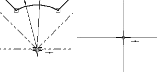
Edit the dimension values as shown in the illustration and then change them back to the original values. This sketch is ready to be used in a feature function such as cutout.
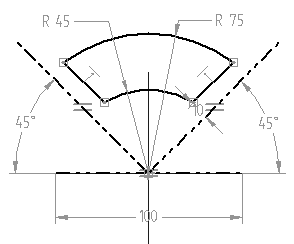
This completes the activity. Close the file and save as cutout.par.
In this activity, you learned how to use construction elements, dimensions and relationships to position a profile. Design intent is maintained by positioning the construction elements. Construction elements do not become a part of the feature but are useful in controlling the position of the geometry.
-
Click the Close button in the upper-right corner of this activity window.